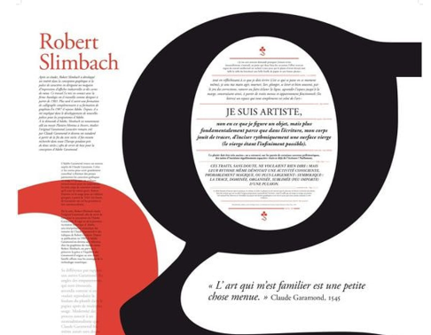
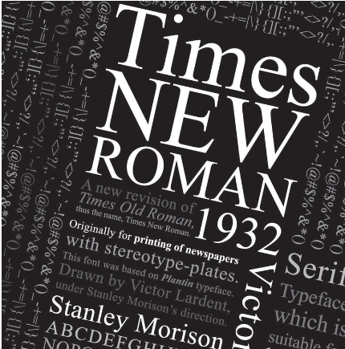
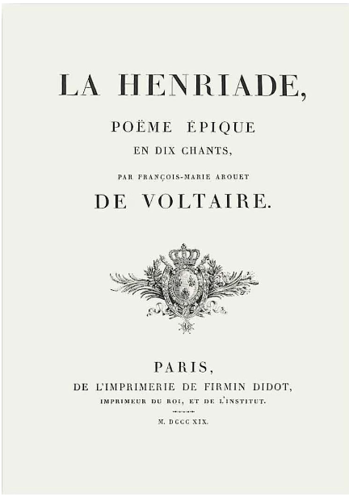
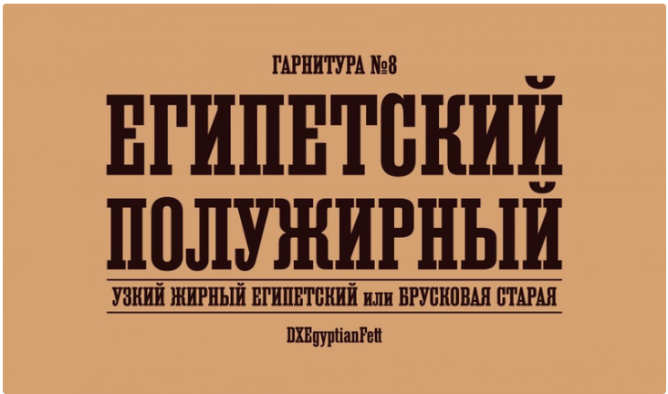
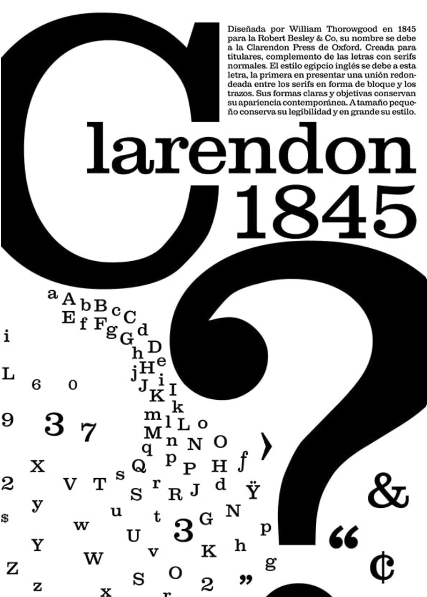

Виды шрифтов: классификация с шаблонами и примерами
Шрифт – важная часть любого дизайна, его тон голоса и настроение. Правильно подобранные шрифты создают ощущение стиля, законченности и качества. С хорошими шрифтами любой дизайн выглядит более продуманным, а информация – уместной. В этой статье разберемся, какие бывают виды шрифтов и как с ними правильно обращаться. Но для начала немного теории.
Словарик
Термин «шрифт» часто используется в самых разных ситуациях, когда речь идет о дизайне. На самом деле в этой теме важны сразу три понятия: гарнитура, шрифт и виды шрифта. Чтобы не запутаться, разберем их все по порядку.
Гарнитура – это семейство шрифтов, которые отличаются по начертанию, но имеют единый стиль и настроение. Всем известные Arial и Garamond – это гарнитуры шрифтов, которые содержат в себе целый набор вариантов: жирные, полужирные, курсивные и другие шрифты.
Шрифт – это какое-то одно начертание в рамках гарнитуры, а ещё файл со специальным разрешением, который скачивается на компьютер и устанавливается в систему. Например, Arial Italic и Garamond Bold – это шрифты.
Чтобы было проще запомнить разницу, можно использовать такую аналогию: гарнитура – это фамилия, а шрифт – имя. Например, Helvetica – это просто фамилия семейства шрифтов, из которой непонятно, о каком именно шрифте идет речь. А Helvetica Neue Light – это точное имя шрифта.
Сделано в Canva
Начертания шрифтов – это то, с каким контрастом и наклоном нарисованы буквы. Чаще всего дизайнеры рисуют один шрифт в обычном, жирном, легком и курсивном варианте и их оттенках – легком курсиве или наоборот, супер-жирном обычном начертании.
Виды шрифтов – это большие группы гарнитур, которые объединили по общему признаку, например, шрифты для заголовков или декоративные шрифты.
Есть несколько способов классификации шрифтов, каждая из которых делит шрифты на группы по какому-то общему признаку. Например, в исторической классификации шрифты делят на группы по времени их возникновения. Ещё шрифты делят на группы рисунку букв, назначению и даже по настроению.
Итак, какие бывают виды шрифтов.
Засечки, или серифы – это такие «подковы» у букв, благодаря которым шрифт выглядит более законченным и устойчивым. Раньше засечки помогали делать более качественный оттиск при печати в типографии и не изнашивать сами буквы. Сегодня считается, что засечки помогают чтению, так как взгляд цепляется за рисунок букв и слова не слипаются в кашу.
Засечки у шрифтов бывают разной формы: острыми плавными и скругленными, сильно или едва заметными. Источник: thegreatmoustache.com
Иногда такие шрифты еще называют антиквами – это историческое название, которое объясняет их происхождение: до 19 века все шрифты в мире были с засечками, а anticuus в переводе с латинского означает «древний».
-
1. Антиква старого стиля
Это собирательное название большой группы шрифтов, которые появились в эпоху Ренессанса в 15 – 17 веках. Такие типы шрифтов унаследовали некоторые свои черты из более ранней письменности от руки, которую использовали в книгах до изобретения книгопечатания.
Главная особенность антиквы старого стиля – это наклонные овалы у букв и несимметричные засечки. Пример такого шрифта – Abobe Garamond Pro. Текст, набранный им, сразу же обретает изысканный стиль и красивое книжное настроение.
Такой шрифт будет хорошо смотреться в оформлении деловых журналов и газет, в документах и на визитках.
Источник: Melanie Top
В Canva бесплатно доступно несколько сотен шрифтов на русском и английском языках. Лучшие варианты в стиле старой антиквы на русском и английском – Crimson Roman, гарнитура Cormorant Garamond, Oranienbaum, PT Serif.
-
2. Переходная антиква
К переходной антикве мир перешел в конце 17 – начале 18 веков. Считается, что первая переходная антиква создавалась для нужд французского короля Людовика 14, и отличается от старой антиквы большим контрастом букв и симметричными засечками.
Переходных антикв не так много, но знают их все: это знаменитые шрифты Times New Roman, Baskerville и Georgia. Этими шрифтами набирают книги и документы, используют их в официальных письмах и других серьезных случаях. Они не устаревают, очень аккуратно смотрятся и их удобно читать.
Источник: devianart
-
3. Антиква нового стиля
Это шрифты нового типа, которые появились в конце 18 века во Франции и отличаются еще большим контрастом между основными и соединительными штрихами букв. Все буквы в таких шрифтах стоят ровно без наклона, благодаря чему кажутся ещё более официальными и строгими.
Считается, что такие шрифты проигрывают в удобочитаемости переходным антиквам, но споры об этом не утихают уже пару веков, а шрифт Didot за это время стал классикой французского стиля в книгопечатании.
Самые знаменитые антиквы нового стиля – это шрифты Bodoni, Didot, Walbaum. Их можно использовать для тех же целей, что и переходные: при печати книг, документов, писем и официальных заявлений.
Источник: devianart
Хорошие бесплатные примеры антиквы нового стиля в Canva на русском – шрифт Ledger и гарнитура Noto Serif Display. На английском – шрифт Antic Didone.
В платной версии Canva Pro можно воспользоваться расширенным списком шрифтов, и попробовать антиквы Abril, Afrah и Afrah Light,Argent Thin на английском языке, и шрифт Quincy на русском.
-
4. Брусковая антиква
Это последний подвид антиквы, который появился в Англии в 19 веке как шрифт для рекламных плакатов, постеров и других крупных носителей. Главная особенность таких шрифтов – мощные прямоугольные засечки у букв и низкий контраст.
Сегодня такие типы шрифтов кажутся напечатанными на машинке, а их узнаваемый рисунок не перепутать ни с чем другим. Среди брусковых шрифтов историки дизайна отдельно выделяют несколько подгрупп: египетские шрифты, геометрические шрифты, гуманистические шрифты и шрифты типа Кларендон.
Источник: Дмитрий Хорошкин
Гарнитура Кларендон – самый удобочитаемый и спокойный шрифт из всего семейства, поэтому её часто используют в современном дизайне. Шрифты такого типа продаются у всех крупных компаний – Adobe, Linotype и других.
Источник: Kevin Gorisnic
Красивые бесплатные примеры брусковой антиквы можно найти и в Canva. Это Alfa Slab One, Faustina Semi Bold, Eszar Extra Bold, Chunk Five и Bio Rmyme Ex для английского языка. На русском можно использовать Foglihten Black PC, Podkova Extra Bold, Rubik Mono и Boldesco Serif.